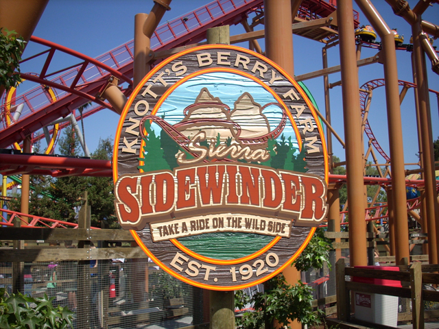
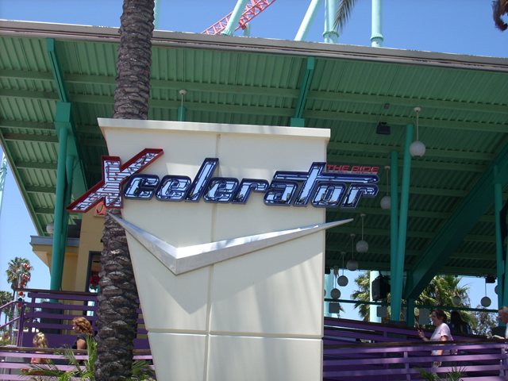
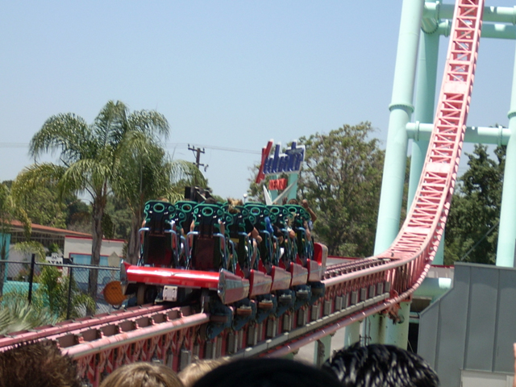
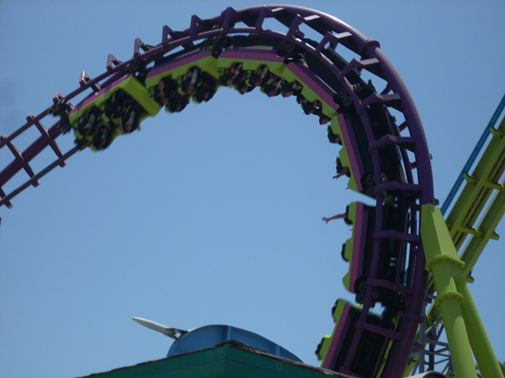
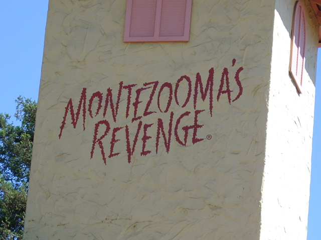
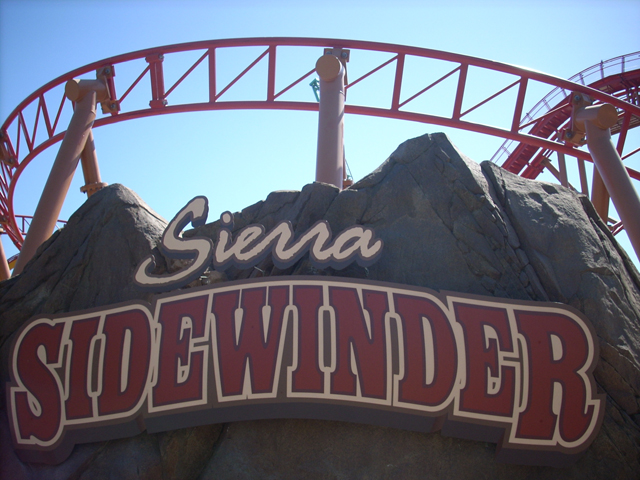
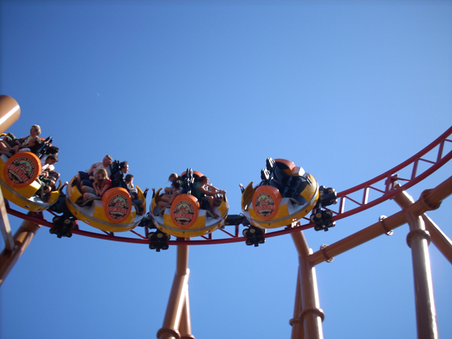
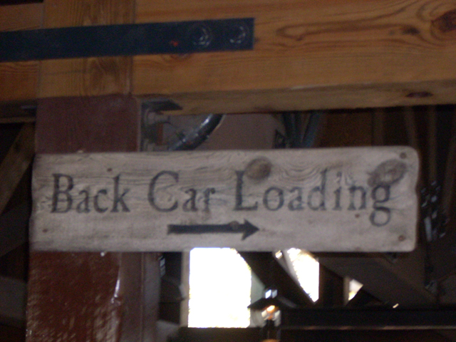
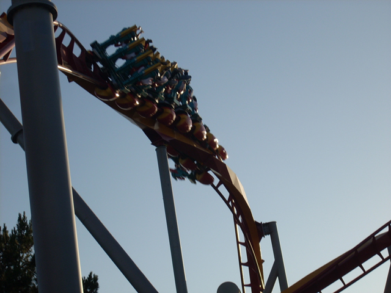

Knotts Summer 2007
Summer is here! The hellfinals are over and I am out of school! Which means its time to get a new credit. And yes, you are seeing secret Peanuts characters on the roof of the Knotts Berry Farm Hotel. Now you learned something today.

Here is Sierra Sidewinder in all its glory.
 Its really fun and spins really good. Pole Position is a piece of s**t compared to this.
Its really fun and spins really good. Pole Position is a piece of s**t compared to this.
After we walked on Sierra Sidewinder, A reride was impossible as the line already grew to 30 min. So Celeste rode this Kiddy Freefall.
 If this is what is Montezoomas Revenge is, Then I'm having Taco Bell for Dinner everynight!
If this is what is Montezoomas Revenge is, Then I'm having Taco Bell for Dinner everynight!
Celeste says "I'm getting two credits today. Now I have a credit count of 19! I'm the new Robb Alvey!"
Knotts Berry Farm is the New Six Flags Magic Mountain! Here are their gum handrails!
Supreme Scream looks better than Power Tower and probably is.
Here is proof that my camera can zoom in.

Xcelerator! Still Knotts' Star Attraction!
 Here they were stacking trains making lines go faster.
Here they were stacking trains making lines go faster.

Launch at the speed of Intamin!
CEDAR POINT REFERENCE!!!!!!!!!!!!!!!
Wow, I can't belive I bothered to ride this.

I am still in shock that Boomerang did not break down on me unlike a certain Vekoma Ride @ DLR.
 What the hell was Knotts thinking when they built this!?!
What the hell was Knotts thinking when they built this!?!
 I'm Jaguar. I can't go very far, I can't go very fast, And if you ride me, people will think you're gay.
I'm Jaguar. I can't go very far, I can't go very fast, And if you ride me, people will think you're gay.

GIVE ME MORE MEXICAN FOOD!!!!!!!!!
 Montezoomas loop through Sierra Sidewinder!
Montezoomas loop through Sierra Sidewinder!
 If I had some friends, I could actually play Catch! But I don't have any friends.
If I had some friends, I could actually play Catch! But I don't have any friends.
I am Britney Spears II! I am not quite as bad as Paris Hilton II because I'm not in jail, but I am still a very spoiled brat!
See, Peanuts Playhouse isn't for kids. They wouldn't have rockclimbing at a Childrens Playhouse! A kid could hurt themselves! Cedar Fair Lies Again!!!!
 Damn Timberline Twister for being closed today! If the ride was running, this would've been a great shot!
Damn Timberline Twister for being closed today! If the ride was running, this would've been a great shot!
Looks like Vekoma wasn't the one who jinxed us today.
I AM BRITNEY SPEARS II! Besides playing thge guitar, I love climbing on Monkey Bars!
I'm FREE! FREEFALLING.... IN THE PEANUTS PLAYHOUSE @ KNOTTS!!!!!!

Congrats for making it this far, So you're rewarded with Sierra Sidewinder Photos!
 As soon as you make it to the top of that lift, the disorientation begins.
As soon as you make it to the top of that lift, the disorientation begins.

On Sierra Sidewinder, Foreward is Backwards, Black is White, East is West!
 ITS THE SPINNING HELIX OF DEATH!!!! BETTER THAN ANY OTHER HELIX OF DEATH!!!!!!!!!!
ITS THE SPINNING HELIX OF DEATH!!!! BETTER THAN ANY OTHER HELIX OF DEATH!!!!!!!!!!
 While Sierra Sidewinder is fun, Xcelerator is the ride you can't get enough of!!!!
While Sierra Sidewinder is fun, Xcelerator is the ride you can't get enough of!!!!
 The ride is 30 seconds of "HOLY CRAP!!! THIS IS INSANE!!!!!!!!!!!!!"
The ride is 30 seconds of "HOLY CRAP!!! THIS IS INSANE!!!!!!!!!!!!!"
That is one fine train.
Flashback to the Old Knotts Berry Farm Days.
"Do I smell Battery Acid?"

The only real seats on Ghostrider.
 Ghostrider is the AntiSilver Bullet! This thing is PACKED WITH FORCE!!! Both the bad kind and the good kind.
Ghostrider is the AntiSilver Bullet! This thing is PACKED WITH FORCE!!! Both the bad kind and the good kind.
 Hello Silver Bullet. Sorry we didn't ride you, you're just not worth a 90 min line,...
Hello Silver Bullet. Sorry we didn't ride you, you're just not worth a 90 min line,...

..But you are worth taking some good offride shots.
Snoopy and Woodstock kick us out.
Good Bye Knotts Berry Farm! See you in October!
 We'll end this update at a good resteraunt. So long!
We'll end this update at a good resteraunt. So long!
Home